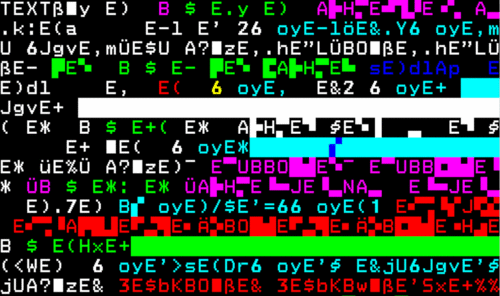

Macro virusA macro virus is a computer virus written in the same macro language as the software it infects — common victims include Microsoft Excel and Word. Because they target software rather than systems, macro viruses can infect any operating system. |
 |
|---|
 |
The first Macro Virus
The first macro virus, called Concept, appeared in July 1995. Subsequently,
macro viruses (most often infecting Word documents) became the main type of viruses
and remained so until the end of the last century, when Microsoft disabled macros in
Office by default (Office versions 2000 and later).
|
|---|
How macro viruses spread?Macro viruses are most commonly found in documents or inserted
as malicious code into word processing programs. They can be contained in documents
attached to emails, or the code can be downloaded after clicking “phishing” links
in banner ads or URLs.
|
|---|
RisksThe main danger of macro viruses is their ability to spread quickly.
As soon as the infected macro is run, all other documents on the user's computer are infected.
|
|---|
Types of Macro VirusesThere are several forms of macro viruses.
Some believe that these viruses are a holdover from the late 1990s,
but in recent years they have returned to active activity, forcing users
to be especially vigilant.
1)Concept Virus
2)Melissa virus
|
 |
|---|
Macro virus |
Alika Tsulygina |
|
|---|